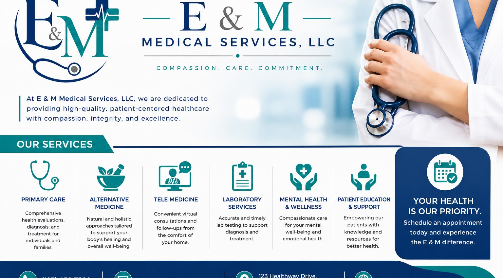

Complete care for every stage of life.
From everyday care to holistic wellness and virtual consultations, our services are designed around one goal — helping you live a healthier, fuller life.
Ten services, one commitment
Every service we provide is grounded in the same principles: careful listening, thorough evaluation, and treatment plans built around you.

Primary Medical Care
Comprehensive first-line healthcare for individuals and families — the foundation of your long-term wellness.

Alternative Medicine
Personalized holistic healthcare approaches that support the body's natural healing process. We focus on improving overall wellness, balancing health, and promoting long-term vitality through complementary treatment methods.

Telemedicine
Convenient virtual healthcare services that allow patients to consult with medical professionals remotely. Receive medical advice, follow-up care, and healthcare guidance from the comfort of your home.

Mental Health & Wellness
Comprehensive support for emotional, mental, and behavioral well-being. We provide compassionate care, wellness guidance, and resources to help individuals manage stress, anxiety, depression, and achieve a healthier quality of life.

Patient Consultations
Focused, unhurried appointments where your concerns are heard and your questions are fully answered.

Health Screenings
Blood pressure, cholesterol, cancer screening, diabetes tests — screenings that give you clarity and peace of mind.
Wellness Programs
Structured guidance for weight management, nutrition, and healthy lifestyle changes that actually stick.

Medical Evaluations
Thorough diagnostic work-ups when you need clear answers and a clear path forward.
Follow-up Care
We stay with you between visits — checking in, adjusting plans, and making sure treatments are working.

Patient Education
Clear explanations of your condition, your options, and your medications — so you can be a full partner in your care.
Your visit, thoughtfully organized
We know that even routine appointments can feel unfamiliar. Here's how a typical visit unfolds.
Welcome & Check-in
A warm greeting from our front desk, a quick review of your information, and no rushed waiting rooms.
Vitals & History
Our staff takes the time to gather your current health status and any recent changes — every visit.
Consultation with your provider
An unhurried conversation about your concerns, a careful examination, and a clear explanation of findings.
Your care plan
You leave with a plan you understand — including next steps, prescriptions, and any follow-up needed.
Ready to become a patient?
New patients are always welcome. Reach out today to schedule your first visit — we'd be honored to care for you.
Schedule an Appointment